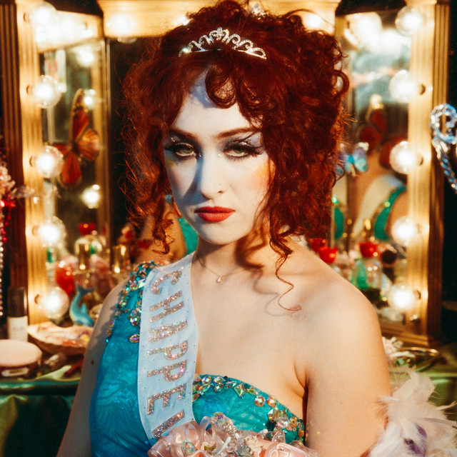
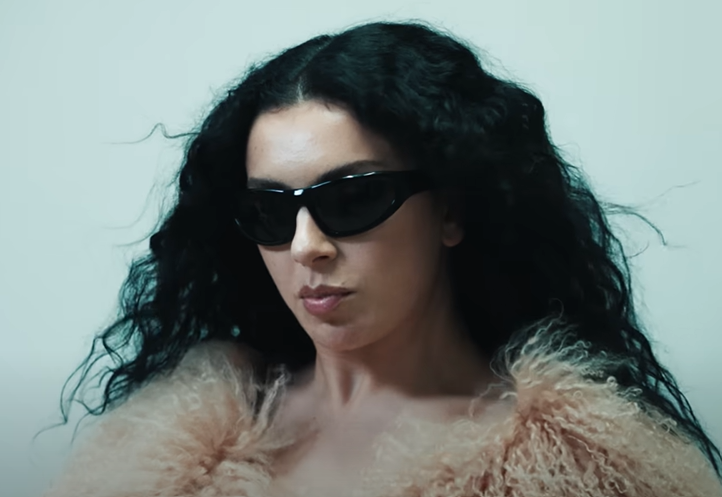

Patrocinadores

Walter White
Descrição: Professor experiente com mais de 20 anos de atuação no ensino médio e superior.
Especialista em reações químicas complexas e apaixonado por ciência.
Especialista em reações químicas complexas e apaixonado por ciência.
Área de Especialidade: Química Orgânica Avançada
Email: wwhite@chemmentor.com
Telefone: (11) 91234-5678
Email: wwhite@chemmentor.com
Telefone: (11) 91234-5678

Chappell Roan
Descrição: Educadora criativa com mais de 15 anos de dedicação ao ensino e à inspiração de mentes curiosas.
Movida pela arte de transformar conteúdos complexos em experiências significativas, une ciência e sensibilidade em sala de aula.
Movida pela arte de transformar conteúdos complexos em experiências significativas, une ciência e sensibilidade em sala de aula.
Área de Especialidade: Metodologia e Sustentabilidade
Email: chappell.roan@ecoorg.org
Telefone: (21) 93456-7810
Email: chappell.roan@ecoorg.org
Telefone: (21) 93456-7810

Charlotte Aitchison
Descrição: Artista e mentora com mais de uma década de experiência.
Apaixonada por sonoridades futurista, atua como guia criativa para novos talentos e projetos experimentais.
Área de Especialidade: Produção Musical Pop e Performance Artística
Email: charli.xcx@neonstudio.art
Telefone: (11) 97654-3210
Email: charli.xcx@neonstudio.art
Telefone: (11) 97654-3210